什么是 GitOps 呢？
GitOps是一套使用Git来管理基础架构和应用配置的实践，而Git指的是一个开源版控制系统。GitOps在运行过程中以Git为声明性基础架构和应用的单一事实来源。GitOps使用Git拉取请求来自动管理基础架构的置备和部署。Git存储库包含系统的全部状态，因此系统状态的修改痕迹既可查看也可审计。GitOps围绕开发者经验而构建，可帮助团队使用与软件开发相同的工具和流程来管理基础架构。除了Git以外，GitOps还支持您按照自己的需求选择工具。
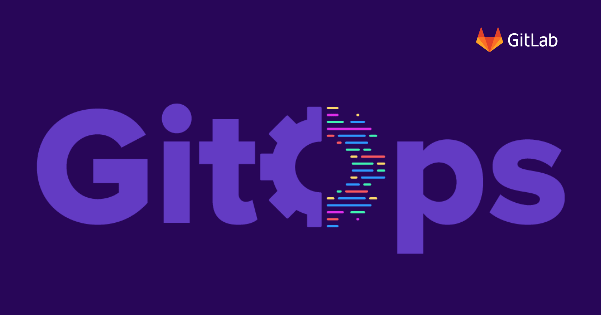
1. GitOps 到底是个什么呢
GitOps = 基础设施即代码(IaC) + 合并请求(MR) + 持续集成/持续交付(CI/CD)
GitOps 是一种运维框架，它采用了 DevOps 在应用程序开发阶段的最佳实践(例如版本控制、协作、合规性和CI/CD工具)，并将其应用于基础设施自动化。
与 GitOps 相比，传统的 DevOps 尽管在软件开发生命周期已实现自动化，但基础架构大体上仍然是一个需要专业团队进行手动操作的过程。随着对基础架构需求的不断增长，实现基础设施自动化变得越来越重要。现代化的基础设施需要弹性机制(速度和规模)，以便能有效地管理持续部署所需的云资源。
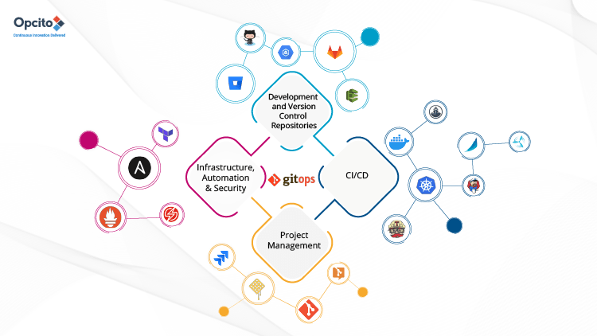
GitOps 用于对基础设施置备的过程进行自动化，采用以 配置文件 存储为代码(基础设施即代码)，配置文件在每次部署时都会生成相同的基础设施环境，来保证环境的一致性，完成整个运维流程的自动化。
三叉戟 - 基础设施即代码(IaC) - Terraform
GitOps使用Git仓库作为基础设施定义的单一可信来源，将所有基础设施以配置文件的方式存储为起来，达到配置和管理应用服务的问题。
三叉戟 - 合并请求(MR)
GitOps使用合并请求作为所有基础设施更新的变更机制，合并请求是团队通过评审和评论进行协作的地方，合并会被提交到您的主干分支并可作为审计日志。
三叉戟 - 持续集成/持续交付(CI/CD)
GitOps使用具有持续集成和持续交付的Git工作流来自动化执行基础架构的更新，在新代码合并后，CI/CD流水线将执行环境中的更改，从而避免手动配置的错误等问题。
对于任何需要协作的工作，改变都是很棘手的，GitOps 也不例外。GitOps 需要所有参与者遵守纪律，它是一种采用全新的方式来工作的承诺。对于团队来说，把所有的事情都记录下来至关重要。
2. GitOps 的核心在于协助
可以覆盖应用程序从构思到代码再到部署全流程的协作
从核心上来说，GitOps 指的是将 Git 存储库作为构建基础设施和部署应用程序所有代码的唯一可信数据源，然后将代码自动化部署到不同的云环境上面(可以借助Terraform完成资源编排)。
每个人都能够在同一个系统中工作，并了解事情的进展情况。无论你是在基础架构中还是在应用程序开发中，所有的更改都遵循同样的流程，即定义工作主体，将其分配给个人，团队协作，然后部署这些代码，并将 Git 存储库作为唯一可信数据源使用。
- GitOps 与代码和协作都有紧密联系
- 使用版本控制系统可以确保一切都被记录且可见，审计跟踪使团队保持合规性。
- 针对于不同的项目和团队，新建
issue来描述添加的目标和任务(多云平台)。 - 在
issue中，记录列出的任务列表的执行程度和进展(通过ME合并请求)。
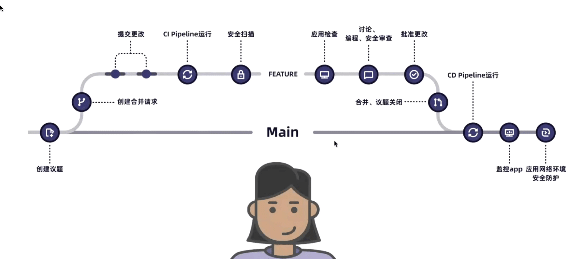
3. GitOps 的使用最佳实践
这里推荐使用极狐 GitLab 云服务(费收费软广告)
良好的运维体系拥有一个无缝链接且完美的体验，能够增进基础设施、运营和开发团队之间的协作，在提高软件环境的稳定性、可靠性和安全性的同时，实现更快速部署，这能够增强团队的信心。比如：
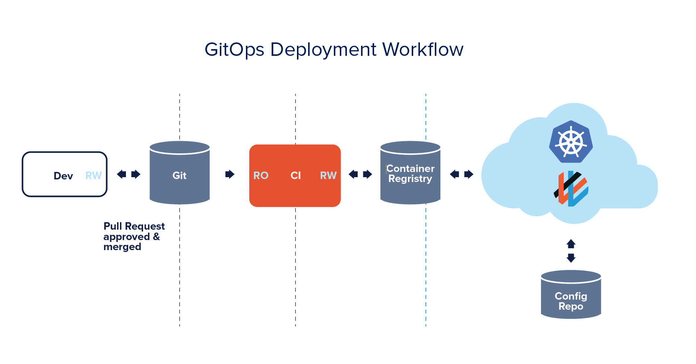
- [1] 版本控制
- 核心 - 配置文件 - 声明式系统
Git仓库作为所有基础设施和应用部署代码的单一事实来源- 通过受保护分支的独特权限，限制可以部署到生产的用户和团队
- [2] 代码审查
- 团队 - 方便后续追溯问题原因
- 提高代码质量，传播最佳实践，防止问题的出现
- [3] 持续集成/持续交付
- 部署 - 无缝体验 - 与
Terraform紧密集成 - 将其与敏捷管理和源代码管理建立在同一个应用程序中
- 支持从物理机、虚拟机、容器到云原生平台的多种基础环境的部署
- 部署 - 无缝体验 - 与
4. GitOps 的大致运行流程
这里推荐使用极狐 GitLab 云服务(费收费软广告)
伴随着 DevOps 在近些年的火爆，围绕 xOps 产生了很多概念，诸如 DevSecOps，AIOps，MLOps，ChatOps 等等，当然还有的主角 GitOps。而GitOps 这个词出现于 2017 年，是由 Weaveworks 公司根据多年云计算基础设施和应用程序管理经验而提出的一个概念。
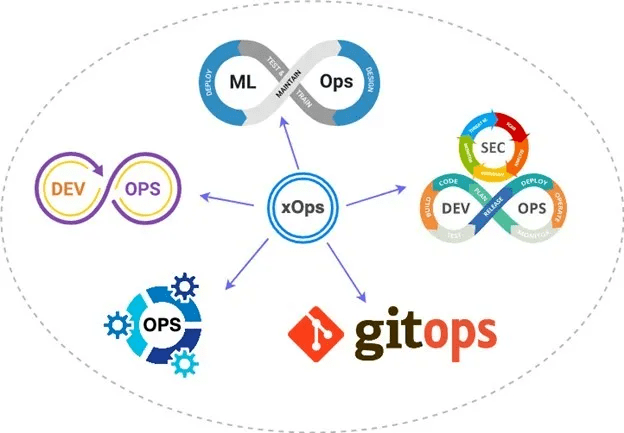
一般情况下，可以使用下面的持续交付系统(示意图)，来完成云原生应用程序的部署与交付。这种 从左到右走到底 的 Push 模式，虽然很容易实现一键式部署，但也存在一些问题。
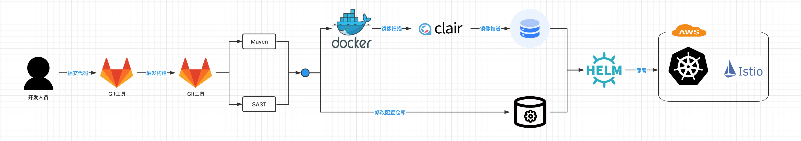
简而言之，就是没有办法保证两侧的服务是一致的，这可能会导致 配置漂移 的发生和安全合规问题的出现，而使用声明式是解决这个问题的关键点。
- [1] 很难保证
- 仓库里清单文件的内容是否和
k8s集群的实际情况是否一致
- 仓库里清单文件的内容是否和
- [2] 不够灵活
- 镜像有更新时不能够自动同步至集群，除非每次从头到尾走一遍部署流程
- [3] 安全合规
- 有可能需要操作人员通过
kubectl命令做一些集群操作
- 有可能需要操作人员通过
声明式系统有个特点，其能够帮我们自动完成应用程序或基础设施系统的描述状态和实际状态的自动同步，保证两者能保持一致。比如，应用部署清单里面应用程序是一个副本(replicas=1)，那么集群侧应用程序就会是一个 pod。
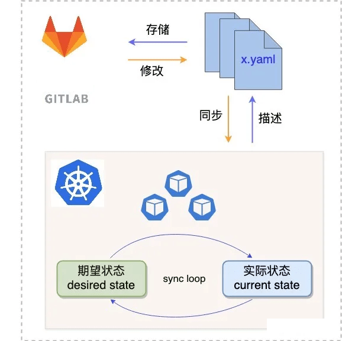
而 GitOps 以声明式系统为基座，以 Git 为单一可信源，即一切皆代码，从而我们可以将上述构建流程改为下面这样的 pull 模式。pull 模式的关键就是，单一可信源与 k8s 集群的集成，当可信源侧的文件清单发生变更的时候，集群侧能够及时捕捉到此变更，从而完成变更清单的部署。
- 这就需要使用的
Git工具支持与k8s打交道的能力。 - 可以将
Git工具与Terraform集成，来完成云基础设施的自动化管理。
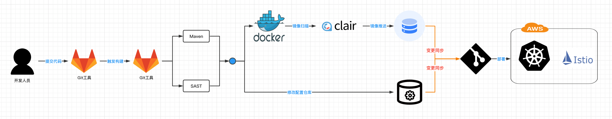
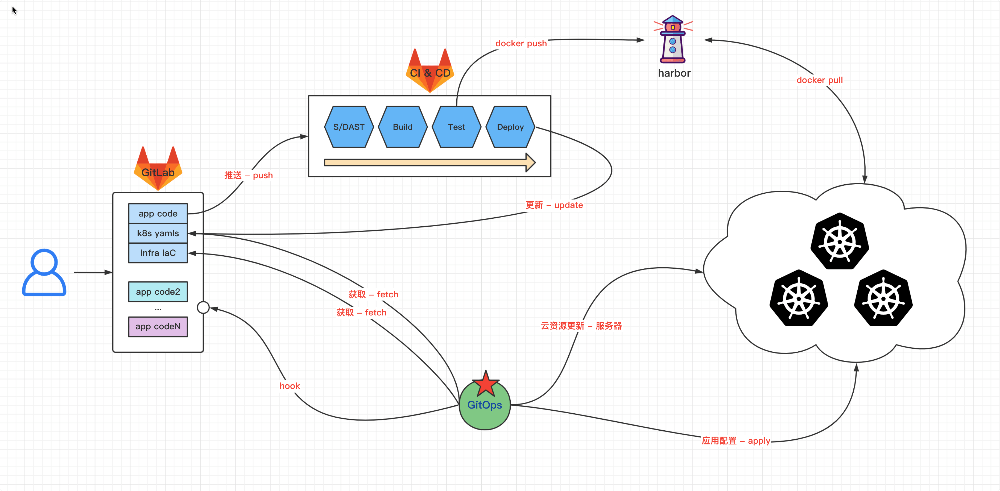
# ------- 0.0 -------
# GitOps的仓库代码结构
# -------------------
# 多云环境
➜ tree -a GitOps
GitOps
└── gitops
├── .gitlab-ci.yaml # CI/CD
└── environments
├── aliyun
│ ├── kubeconfig.yaml # k8s集群配置
│ ├── main.tf # 基础设置配置
│ └── yaml
│ └── app.yaml # 集群服务配置
└── k3s
└── yaml
├── app.yaml # 集群服务配置
└── kubeconfig.yaml # k8s集群配置
以 Git 为单一可信源，所有与软件开发相关流程中的代码(包括基础设施代码、应用程序源码、配置等)都会存储在 Git 仓库中。所有管理过程都是通过合并请求(MR)来完成的，当需要对基础设施作某些变更时，只需要修改代码，并提交 MR，在所有的修改都被审查和批准后，代码可以被合并到主分支上。一旦代码变化被合并，所有的变化将被部署到生产中。
- GitOps 的优点
- 快速进行变更 - 更新和回滚
- 人员工作体验的提升 - 部署流程完美
- 安全性提高 - 仓库进行权限分配
- 合规审计容易做 - 所见即所得
- GitOps 的缺点
- 协作文化的建立 - 逐步培养
Git Workflow的建立 - 混合云保证服务可用- 敏感信息的处理 - 敏感信息(与
Vault结合解决) -GitSecOps
5. GitOps 集成 ArgoCD 实践
ArgoCD 只是一个持续交付工具，但其实核心功能点！
ArgoCD 是一款开源且主要针对 Kubernetes 来做 GitOps 的持续交付工具。现在是 CNCF 的孵化项目。其整体架构图如下：
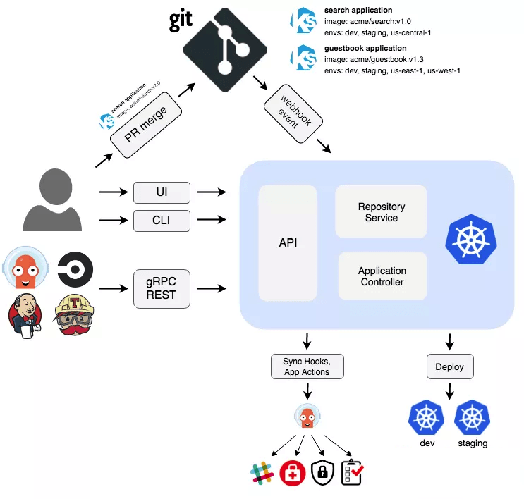
ArgoCD 是以 Kubernetes Controller 的形式来实现的，它会对运行在 Kubernetes 集群上的应用程序进行监听，并将实际运行状态和期望状态（在部署清单文件中指定，且存储在版本控制系统中）进行对比，当两者状态不一致的时候，则提示 OutOfSync，此时可以通过自动或者手动的方式来完成同步操作，以让两者状态再次保持一致。存储在 Git 仓库中的任何变更都会被自动同步至集群侧。
这其实就是实现 GitOps 的核心原理。所有对于应用程序或者基础设施的变更仅仅需对 Git 仓库做一些 MR 或者 Push 操作即可实现，变更会自动部署。所以，虽然 GitOps 的核心不是 Git，但是却与 Git 息息相关。
Git 将作为存储部署清单文件的版本控制系统，与 ArgoCD 做集成，实现 GitOps workflow。整体示意图如下所示：
- 一个
Git实例 - 一个
ArgoCD运行实例
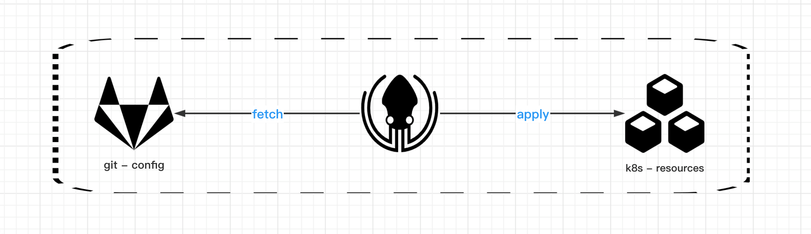
- [1] 安装和启动 ArgoCD 服务
# 安装ArgoCD服务(官方)
# 使用Kustomize来完成对部署清单文件的编排
# 同时用sops来处理敏感信息在Git上的存储问题
$ kubectl create namespace argocd
$ kubectl apply -n argocd -f https://raw.githubusercontent.com/argoproj/argo-cd/stable/manifests/install.yaml
# 暴露argocd的服务端口
$ kubectl -n argocd port-forward pods/argocd-server-6db46c865b-qqnbl 8080:8080
# 获取登陆密码
$ kubectl -n argocd get secret argocd-initial-admin-secret -o jsonpath="{.data.password}" | base64 -d
RDMpJRKRfsmkcgbP
# 访问ArgoCD服务
http://localhost:8080
admin/RDMpJRKRfsmkcgbP
- [2] 介绍 sops 的使用
# 这sops是一款开源的加密文件的编辑器(以GPG为例演示)
# 支持YAML、JSON、ENV、INI和BINARY格式，且支持多种加密方式
# 安装
$ brew install gnupg
$ brew install sops
# 生成一对key
$ gpg --full-generate-key
# sops和gpg的结合 - 创建sops配置文件
# encrypted_regex: 加密规则；规定需要对哪些字段的值进行加密
# gpg: 加密所需要的fingerprint值
$ cat >> .sops.yaml << EOF
creation_rules:
- encrypted_regex: '^(username|title|)$'
pgp: 'ED2A6947C44F9228B39E65B705A11CD02E66FF4B'
EOF
# sops和gpg的结合 - 创建敏感信息的文件
$ cat >> secret.yaml << EOF
apiVersion: v1
data:
username: eGlhb21hZ2UK=
company: SmlIdShHaXRMYWIp=
kind: Secret
metadata:
labels:
app: demo
name: sops-demo
namespace: jihu-gitlab
type: Opaque
EOF
# sops和gpg的结合 - 敏感信息的文件加密
$ sops -e secret.yaml
- [3] 配置 ArgoCD 的服务
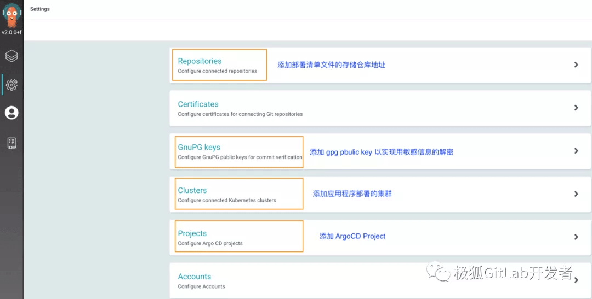
- [4] 使用 ArgoCD 的服务
# 在ArgoCD的Project下面添加application来让GitOps飞起来
# 至此ArgoCD配置完成，且此ArgoCD实例已经在监听配置的Git的仓库
# 如果该仓库的配置文件发生了变化，则变化会被自动同步至Kubernetes集群侧
# 查看运行的应用程序
$ kubectl -n gitops-argocd get pods
NAME READY STATUS RESTARTS AGE
deploy-766c4cbbfc-m8dz6 1/1 Running 0 53m
# 查看此应用程序的输出 - 映射端口出来
$ kubectl -n gitops-argocd port-forward pods/deploy-766c4cbbfc-m8dz6 9999:9999
$ curl localhost:9999/jihu
Hello JiHu GitLab,this is xiaomage,version is v6.1.0
6. GitOps 的相关参考链接
送人玫瑰，手有余香！